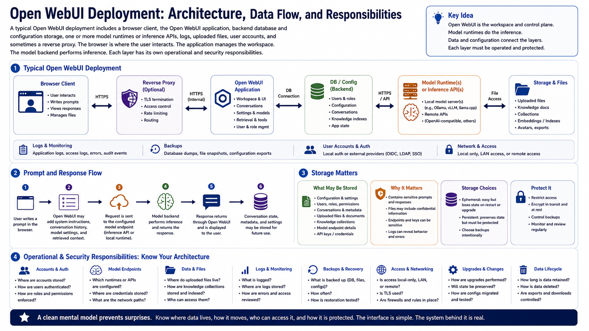

Core Architecture Concepts
Connecting to LMS... Progress: in progress

Narration
A typical Open WebUI deployment includes a browser client, the Open WebUI application, backend database and configuration storage, one or more model runtimes or inference APIs, logs, uploaded files, user accounts, and sometimes a reverse proxy. The browser is where the user interacts. The application manages the workspace. The model backend performs inference. Each layer has its own operational and security responsibilities.
Prompts and responses move through several places. A user writes a prompt in the browser. The application may add system instructions, conversation history, selected model settings, or retrieved document context. The request is then sent to a configured model endpoint. The response returns through the application and is displayed to the user, often with conversation state stored for later use.
Storage matters because Open WebUI can preserve configuration, users, conversations, uploaded content, knowledge collections, and application state. Logs may capture operational events or errors. Backups may preserve the database and files. If storage is ephemeral, upgrades or restarts can lose state. If storage is persistent, it must be protected because it may contain sensitive prompts, outputs, files, and endpoint details.
Architecture clarity helps operators troubleshoot and secure the system. They should know where accounts are stored, how model endpoints are configured, where files live, what data is logged, what is backed up, and whether access is local, LAN-based, or remote. A clean mental model prevents the interface from hiding important infrastructure choices.